Исследование сетевых утилит, SSH, Git, SFTP
На скриншоте 0.png изображено окно настройки программы PuTTY для подключения к учебному серверу по протоколу SSH (Secure Shell).
kubsu-dev.ru – доменное имя сервера.58528 порт, выданный преподавателем.SSH – шифрованное соединение, защищающее передаваемые данные (логин, пароль, команды).После нажатия Open PuTTY установит TCP-соединение с сервером и запустит сеанс SSH, запросив логин (u82311) и пароль.
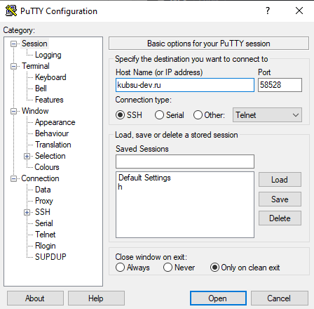
На скриншоте 1.png запечатлён момент после успешного входа. Видна строка приветствия Ubuntu, системная информация и приглашение командной строки u82311@web-server:~$. Это подтверждает, что аутентификация пройдена, и пользователь готов выполнять команды.
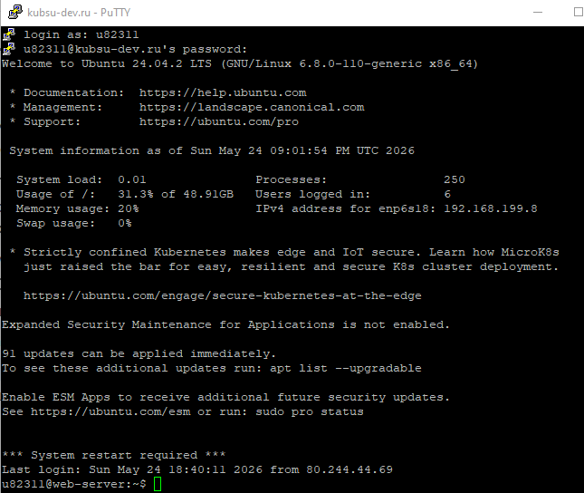
Команда: ping -c 4 kubsu.ru
Что делает: Утилита ping отправляет ICMP-пакеты (Echo Request) на указанный узел и измеряет время ответа (RTT). Опция -c 4 ограничивает количество запросов четырьмя. Это позволяет проверить связь между локальным узлом (сервером, с которого выполняется команда) и удалённым хостом (kubsu.ru).
Результат: В первой строке вывода виден IP-адрес 212.192.128.52. Все 4 пакета успешно доставлены (потеря 0%), среднее время ответа составило 1.008 мс.
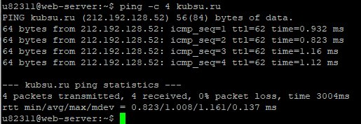
Команда: nslookup -type=A kubsu.ru
Запрашивает у DNS-сервера адресную запись (A), которая связывает доменное имя с IPv4-адресом. В ответе получен тот же адрес 212.192.128.52.
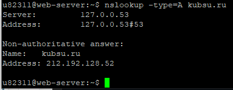
Команда: nslookup -type=MX kubsu.ru
MX-записи указывают, какие почтовые серверы обслуживают домен, с указанием приоритета (чем меньше число, тем выше приоритет). Для kubsu.ru получены:
mx2.kubannet.rumx.kubannet.rumx.kubsu.ru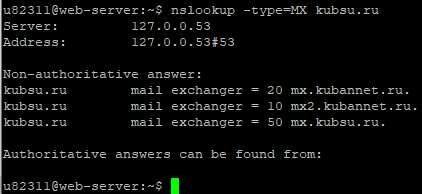
Команда: nslookup -type=A kubsu-dev.ru
Домену kubsu-dev.ru соответствует IP-адрес 212.192.134.135.
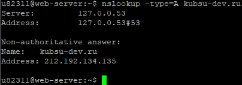
Команда: nslookup -type=MX kubsu-dev.ru
Для этого домена MX-записи отсутствуют (ответ No answer). Это означает, что домен не имеет собственных почтовых серверов. Однако в авторитативном ответе указаны DNS-серверы, обслуживающие домен: origin = nsl.nameself.com, mail addr = support.regtime.net.
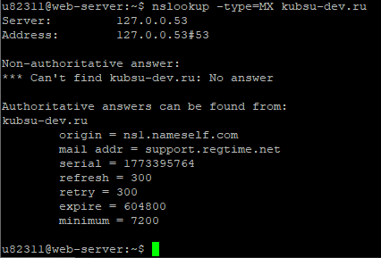
Команда: whois kubsu.ru
Утилита whois запрашивает регистрационные данные домена из базы данных регистратора. В выводе найдена строка created: 1998-03-28T12:18:30Z – домен зарегистрирован 28 марта 1998 года. Срок действия оплачен до 30 апреля 2027 года (paid-till: 2027-04-30T21:00:00Z).
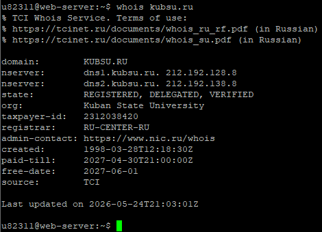
Команда: whois kubsu-dev.ru
Домен зарегистрирован 12 февраля 2020 года (created: 2020-02-12T15:55:06Z). Оплачен до 12 февраля 2027 года (paid-till: 2027-02-12T15:55:06Z).
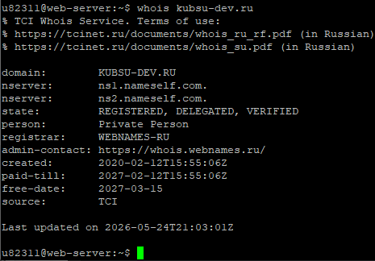
На локальном компьютере создана папка laba1, в которую помещены все скриншоты и файлы index.html, style.css (скриншот 5.1.png).
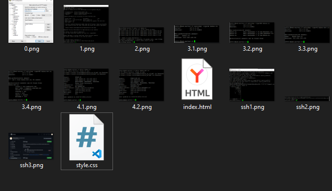
Выполнены команды:
git init
git add .
git commit -m "first commit"
git branch -M main
git remote add origin https://github.com/trrrrrrrrrrrrrrrrrr/wl.git
git push -u origin mainРепозиторий создан, все файлы отправлены на GitHub (скриншот 5.2.png).
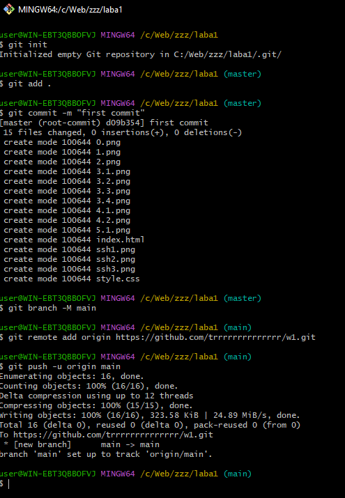
Для безопасного клонирования через SSH на сервере сгенерирована ключевая пара (ssh-keygen -t ed25519). Скриншот 5.3.1.png показывает процесс генерации, 5.3.2.png – вывод публичного ключа.
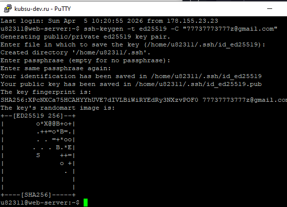
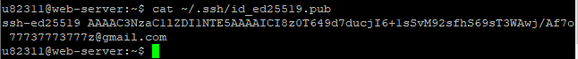
Публичный ключ скопирован и добавлен в настройки учётной записи GitHub (раздел SSH and GPG keys). Скриншот 5.4.png подтверждает успешное добавление.
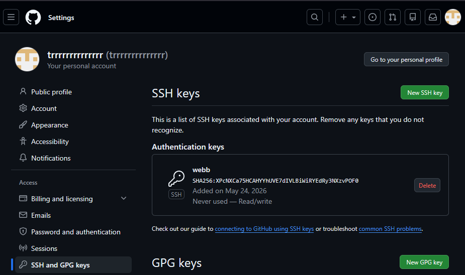
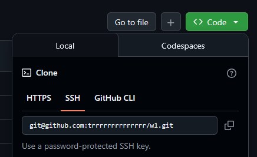
На сервере в каталоге ~/www выполнена команда:
git clone git@github.com:rrrrrrrrrrrr/rw1.gitСкриншот 5.6.png показывает процесс клонирования в папку wl (позже переименована в w1). После клонирования все файлы оказались на сервере.
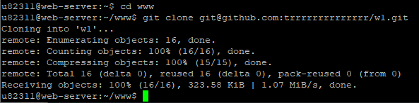
Для получения файлов с сервера на локальную машину использован клиент FileZilla с протоколом SFTP (SSH File Transfer Protocol).
kubsu-dev.ru, порт 58528, логин u82311, пароль скрыт./home/u82311/www/w1 (файлы проекта).G:\p1\).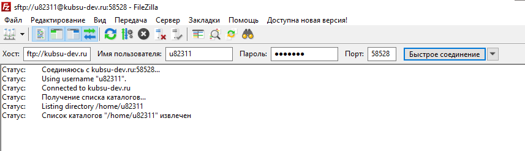
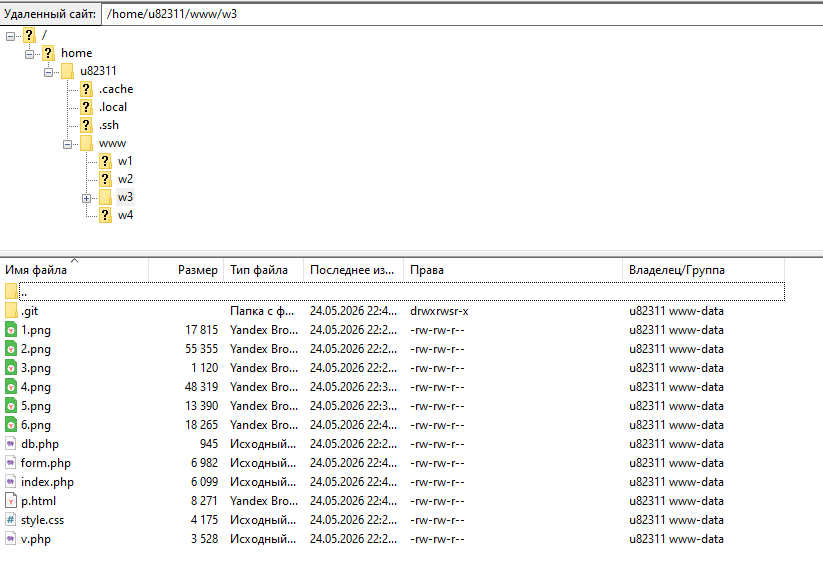
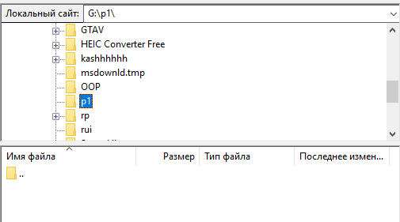
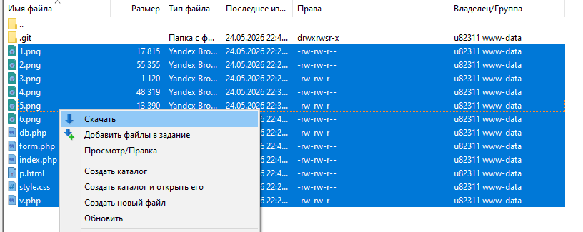
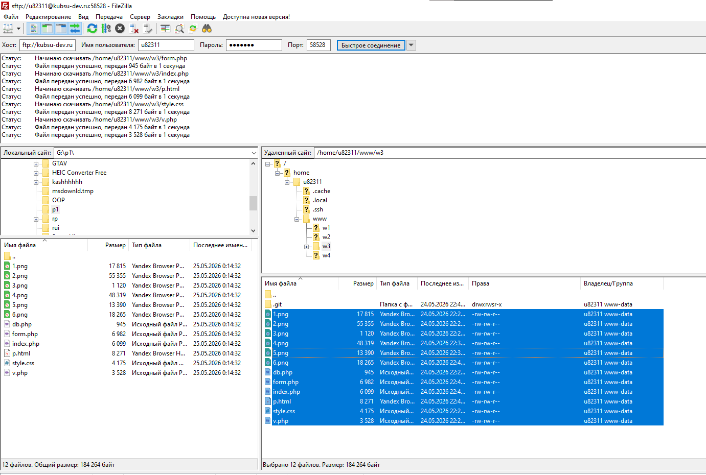
После скачивания новые скриншоты (FileZilla, git pull) были добавлены в репозиторий и отправлены на GitHub. Скриншот 7.1.png показывает коммит с добавлением 11 новых файлов, а 7.2.png – выполнение git pull на сервере для синхронизации изменений.
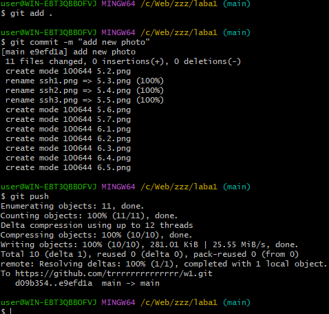
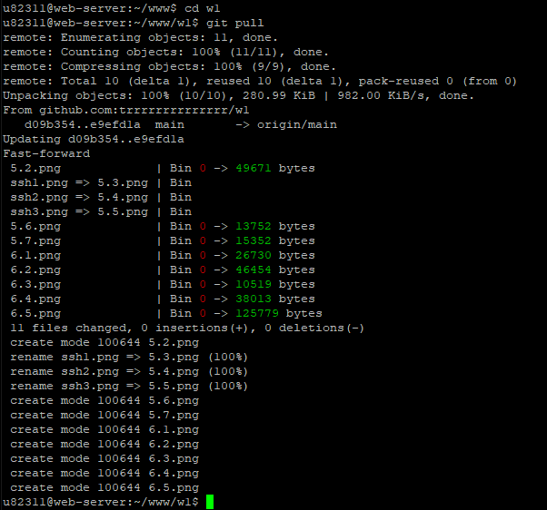